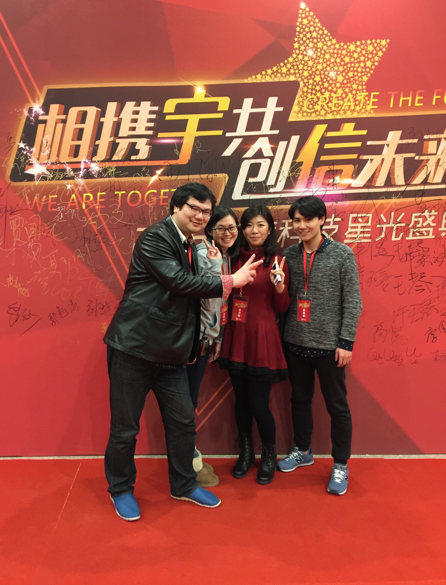

Professional Experiences
When I came back from the US, everything seemed to step on the high way. I set off on my first internship in Yusys Technologies Corporation, a financial IT company in Beijing. I worked for their marketing department, but my foremost job was to assist in their preparation for the annual gala. I was assigned to develop citations for awarded employees and process video clips to be shown on the gala. Finally, the result was gratifying. And this is a news report about the gala. My second internship was more journalism-related. Last September, I started to work as an intern news editor in Phoenix New Media, taking charge of news gathering, editing and weekly competitive analyses. Compared with my last internship, the news editing job had less creative processes and put more emphasis on high degree of news sensitivity and the quantity of outputs. Soon I felt work like this that just to mechanically transport news content from one site to another might not really suit me, but I didn’t give it up until the end of the semester. Here is one of the many pieces of news I edited and published on Phoenix's website, at the end of which my name is recorded.
